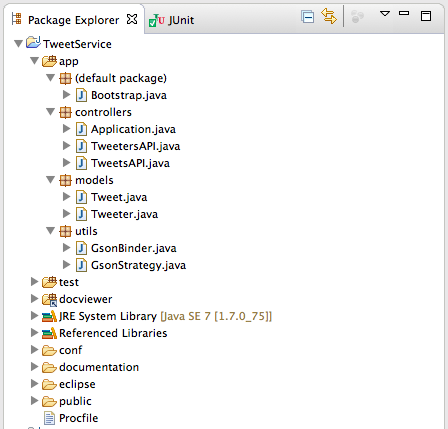
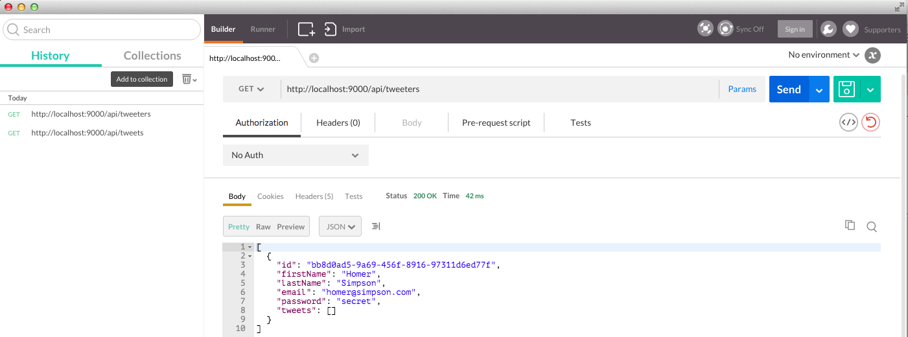
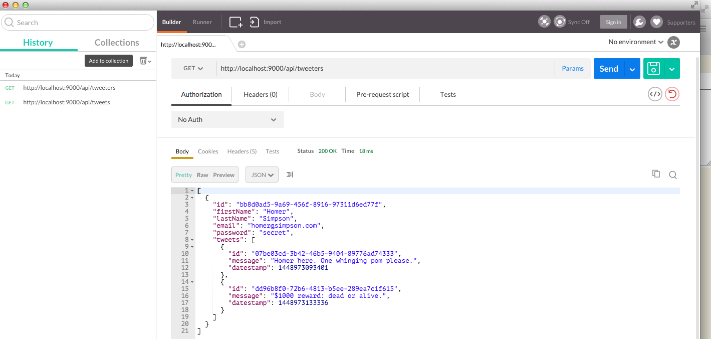
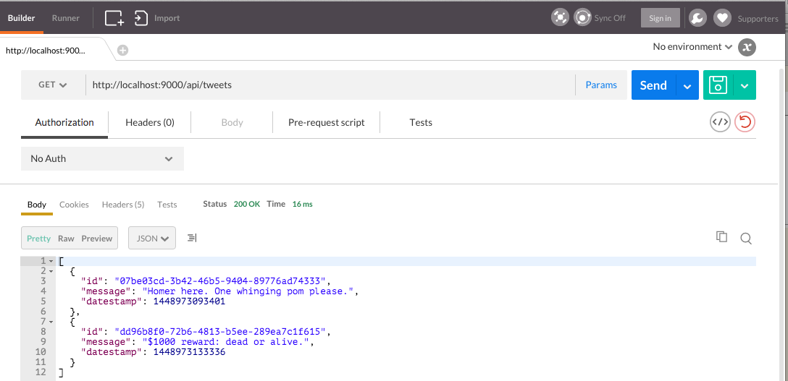

This is a follow-on lab to MyTweet-Assignment-Studio-01. The lab provides guidance but not comprehensive instructions (which is reasonable given that it relates to an assignment). The guidance addesses issues that might otherwise prove quite difficult to resolve.
The aim of the previous lab was to facilitate the creation of a walking skeleton of the baseline Android MyTweet app, the subject of the second and final Mobile Application Development assignment.
In this lab we further develop MyTweet Android client and Play service by introducing a Tweeter model and establishing a many-to-one bi-directional relationship between Tweeter and Tweet models.
In this lab we will work with three applications:
Figure 1 shows a typical project structure for the service.

In particular note the presence of a new class GsonStrategy. This is required as a result of introducing the entity relationship between Tweet and Tweeter classes.
In the Tweeter model class we establish a relationship with the Tweet model as follows:
@OneToMany(mappedBy="tweeter", cascade = CascadeType.ALL)
public List<Tweet> tweets = new ArrayList<Tweet>();
What this is expressing is that:
Here is the new Tweeter model code including the above snippet. We are familiar with most aspects of this Tweeter class from previous labs such as, for example, Donation.
Note that we are generating the id (uuid) in the client as we did with the Tweet model.
File: Tweeter.java
package models;
import java.util.ArrayList;
import java.util.List;
import javax.persistence.CascadeType;
import javax.persistence.Entity;
import javax.persistence.Id;
import javax.persistence.OneToMany;
import play.db.jpa.GenericModel;
@Entity
public class Tweeter extends GenericModel
{
@Id
public String id;
public String firstName;
public String lastName;
public String email;
public String password;
@OneToMany(mappedBy="tweeter", cascade = CascadeType.ALL)
public List<Tweet> tweets = new ArrayList<Tweet>();
public static Tweeter findByEmail(String email)
{
return find("email", email).first();
}
public boolean checkPassword(String password)
{
return this.password.equals(password);
}
public String getFullName()
{
return firstName + " " + lastName;
}
}
The only change to the Tweet model is the addition of the other side of the relationship introduced in Tweeter:
@ManyToOne
public Tweeter tweeter;
A tweeter may own (create) many tweets but a tweet will always have been created by a single tweeter.
Here is the complete class:
package models;
import javax.persistence.Entity;
import javax.persistence.Id;
import javax.persistence.ManyToOne;
import play.db.jpa.GenericModel;
@Entity
public class Tweet extends GenericModel
{
@Id
public String id;
public String message;
public Long datestamp;
@ManyToOne
public Tweeter tweeter;
}
Ensure the routes file accommodates the new Tweeter model:
# Routes
# This file defines all application routes (Higher priority routes first)
# ~~~~
# Home page
GET / Application.index
# Tweeter (the user)
GET /api/tweeters TweetersAPI.getAllTweeters
GET /api/tweeters/{id} TweetersAPI.getTweeter
POST /api/tweeters TweetersAPI.createTweeter
DELETE /api/tweeters/{id} TweetersAPI.deleteTweeter
DELETE /api/tweeters TweetersAPI.deleteAllTweeters
# Tweet
GET /api/tweets TweetsAPI.getAllTweets
DELETE /api/tweets TweetsAPI.deleteAllTweets
GET /api/tweeters/{id}/tweets TweetsAPI.getTweets
GET /api/tweeters/{id}/tweets/{tweetId} TweetsAPI.getTweet
POST /api/tweeters/{id}/tweets TweetsAPI.createTweet
DELETE /api/tweeters/{id}/tweets/{tweetId} TweetsAPI.deleteTweet
# Ignore favicon requests
GET /favicon.ico 404
# Map static resources from the /app/public folder to the /public path
GET /public/ staticDir:public
# Catch all
* /{controller}/{action} {controller}.{action}
Here is the GsonStrategy class. Locate it in Utils.
package utils;
import models.Tweet;
import com.google.gson.ExclusionStrategy;
import com.google.gson.FieldAttributes;
public class GsonStrategy implements ExclusionStrategy
{
public boolean shouldSkipClass(Class<?> arg0)
{
return false;
}
public boolean shouldSkipField(FieldAttributes f)
{
return (f.getDeclaringClass() == Tweet.class && f.getName().equals("tweeter"));
}
}
Both API files are presented here. Mostly they match those you have already encountered in the Donation labs. But some additional functionality is introduced to cater for the entity relationship between Tweet and Tweeter.
Filename: TweetersAPI.java
package controllers;
import java.util.List;
import com.google.gson.Gson;
import com.google.gson.GsonBuilder;
import com.google.gson.JsonElement;
import models.Tweet;
import models.Tweeter;
import play.mvc.Controller;
import utils.GsonStrategy;
public class TweetersAPI extends Controller
{
static Gson gson = new GsonBuilder()
.setExclusionStrategies(new GsonStrategy())
.create();
public static void getAllTweeters()
{
List<Tweeter> Tweeters = Tweeter.findAll();
renderJSON(gson.toJson(Tweeters));
}
public static void getTweeter(String id)
{
Tweeter tweeter = Tweeter.findById(id);
if (tweeter == null)
{
notFound();
}
else
{
renderJSON(gson.toJson(tweeter));
}
}
public static void createTweeter(JsonElement body)
{
Tweeter tweeter = gson.fromJson(body.toString(), Tweeter.class);
tweeter.save();
renderJSON(gson.toJson(tweeter));
}
public static void deleteTweeter(String id)
{
Tweeter tweeter = Tweeter.findById(id);
if (tweeter == null)
{
notFound("No Tweeter with ID" + id);
}
else
{
tweeter.delete();
renderJSON(gson.toJson(tweeter));
}
}
/**
* This method deletes all tweeters and tweets.
*/
public static void deleteAllTweeters()
{
List<Tweeter> tweeters = Tweeter.findAll();
int numberTweeters = tweeters.size();
for(int i = 0; i < numberTweeters; i += 1)
{
Tweeter tweeter = tweeters.get(i);
List<Tweet> tweets = tweeter.tweets;
for(int j = 0; j < tweets.size(); j += 1)
{
Tweet tweet = Tweet.findById(tweets.get(j).id);
tweeter.tweets.remove(tweet);
tweeter.save();
tweet.delete();
}
tweeter.delete();
}
renderText("success");
}
}
Filename: TweetsAPI.java
package controllers;
import java.util.List;
import com.google.gson.Gson;
import com.google.gson.GsonBuilder;
import com.google.gson.JsonElement;
import models.Tweet;
import models.Tweeter;
import play.mvc.Controller;
import utils.GsonStrategy;
public class TweetsAPI extends Controller
{
static Gson gson = new GsonBuilder()
.setExclusionStrategies(new GsonStrategy())
.create();
/**
*
* @param id : The tweeter id (tweet owner)
* @param body : The tweet to be persisted
*/
public static void createTweet(String id, JsonElement body)
{
Tweet tweet = gson.fromJson(body.toString(), Tweet.class);
Tweeter tweeter = Tweeter.findById(id);
tweeter.tweets.add(tweet);
tweet.tweeter = tweeter;
tweet.save();
renderJSON(gson.toJson(tweet));
}
public static void getAllTweets()
{
List<Tweet> tweets = Tweet.findAll();
renderJSON(gson.toJson(tweets));
}
/**
*
* @param id : The id of the tweeter (the tweet list owner)
*/
public static void getTweets(String id)
{
Tweeter tweeter = Tweeter.findById(id);
if (tweeter == null)
{
notFound();
}
renderJSON(gson.toJson(tweeter.tweets));
}
/**
*
* @param id : The tweeter id. This is redundant here since
* tweet id a uuid and so unique.
* @param tweetId : The id of tweet sought.
*/
public static void getTweet (String id, String tweetId)
{
Tweet tweet = Tweet.findById(tweetId);
if (tweet == null)
{
notFound();
}
else
{
renderJSON(gson.toJson(tweet));
}
}
/**
*
* @param id : The tweeter id. This is redundant here since
* tweet id a uuid and so unique.
* @param tweetId : The id of tweet for deletion.
*/
public static void deleteTweet(String id, String tweetId)
{
Tweet tweet = Tweet.findById(tweetId);
if (tweet == null)
{
notFound();
}
else
{
tweet.delete();
renderText("success");
}
}
public static void deleteAllTweets()
{
Tweet.deleteAll();
renderText("success");
}
}
The model classes used in the Android client, are introduced in this step.
The Tweet model class remains unchanged (excepting the change of datestamp type). No relationship between Tweet and Tweeter will exist in the client.
package org.wit.mytweet.model;
import java.util.Date;
import java.util.UUID;
public class Tweet
{
public String id;
public String message;
public Long datestamp;
public Tweet(String message)
{
id = UUID.randomUUID().toString();
datestamp = new Date().getTime();
this.message = message;
}
}
Here is the new Tweeter model class. Observe that the id is generated here rather than in the Play app on the server as discussed at the end of the previous assignment studio lab.
Also note that an entity relationship with Tweet is not defined. Again, this is a role of the service.
package org.wit.ictskills.models;
import java.util.UUID;
public class Tweeter
{
public String id;
public String firstName;
public String lastName;
public String email;
public String password;
public Tweeter(String firstName, String lastName, String email, String password)
{
this.id = UUID.randomUUID().toString();
this.firstName = firstName;
this.lastName = lastName;
this.email = email;
this.password = password;
}
}
The core of this file matches that developed and tested in the JUnit tester.
Filename: MyTweetProxy.java
package org.wit.ictskills.main;
import org.wit.ictskills.models.Tweet;
import org.wit.ictskills.models.Tweeter;
import java.util.List;
import retrofit.Call;
import retrofit.Callback;
import retrofit.http.Body;
import retrofit.http.DELETE;
import retrofit.http.GET;
import retrofit.http.POST;
import retrofit.http.Path;
public interface MyTweetServiceProxy
{
@GET("/api/tweeters")
Call<List<Tweeter>> getAllTweeters();
@GET("/api/tweeters/{id}")
Call<Tweeter> getTweeter(@Path("id") String id);
@POST("/api/tweeters")
Call<Tweeter> createTweeter(@Body Tweeter tweeter);
@DELETE("/api/tweeters/{id}")
Call<Tweeter> deleteTweeter(@Path("id") String id);
@DELETE("/api/tweeters")
Call<String> deleteAllTweeters();
@GET("/api/tweets")
Call<List<Tweet>> getAllTweets();
@DELETE("/api/tweets")
Call<String> deleteAllTweets();
@GET("/api/tweeters/{id}/tweets")
Call<List<Tweet>> getTweets(@Path("id") String id);
@GET("/api/tweeters/{id}/tweets/{tweetId}")
Call<Tweet> getTweet(@Path("id") String id, @Path("tweetId") String tweetId);
@POST("/api/tweeters/{id}/tweets")
Call<Tweet> createTweet(@Path("id") String id, @Body Tweet tweet);
@DELETE("/api/tweeters/{id}/tweets/{tweetId}")
Call<String> deleteTweet(@Path("id") String id, @Path("tweetId") String tweetId);
}
Some changes are required to accomodate the new Tweeter class and its relationship with Tweet. Following are some suggestions.
Signup and Login
It is assumed you have already introduced and fully implemented these activities. Implementation of this functionality has been covered in the Donation labs.
MyTweetApp
public Tweeter logged_in_tweeter;
Also required is a field for the current list of tweeters:
public List <Tweeter> tweeters = new ArrayList<Tweeter>();
And a method to authenticate:
public Tweeter validUser (String email, String password)
{
for (Tweeter tweeter : tweeters)
{
if (tweeter.email.equals(email) && tweeter.password.equals(password))
{
logged_in_tweeter = tweeter;
return tweeter;
}
}
return null;
}
TimeLineFragment
Add Tweeter & MyTweetApp fields:
private Tweeter tweeter;
private MyTweetApp app;
Initialize tweeter in onCreate:
@Override
public void onCreate(Bundle savedInstanceState)
{
super.onCreate(savedInstanceState);
...
app = (MyTweetApp) getActivity().getApplication();
tweeter = app.logged_in_tweeter;
...
}
In the first assignment studio we demonstrated how to save a tweet to the service. In that situation the Tweeter model did not exist. Here is a code snippet to reflect the presence of a Tweeter and an entity relationship with its Tweet list.
public void transmitTweet()
{
Call<Tweet> call = app.tweetService.createTweet(app.logged_in_tweeter.id, tweet);
call.enqueue(this);
}
At this stage of development you should have implemented the following:
As part of the assignment you will be writing and executing comprehensive JUnit tests.
Here is sample output generated in Postman.



Consider the TweetListFragment class, also referred to by some as TimeLineFragment.
Here we show the parts of the class responsible for fetching a list of tweets from the service.
public class TweetListFragment extends ListFragment implements
OnItemClickListener,
AbsListView.MultiChoiceModeListener,
Callback<List<Tweet>>
{
...
/**
* Retrofit used to refresh tweet list
*/
private void refreshTweetList()
{
Call<List<Tweet>> call = app.tweetService.getAllTweets();
call.enqueue(this);
}
@Override
public void onResponse(Response<List<Tweet>> response, Retrofit retrofit)
{
//deleteAllLocalTweets();
List<Tweet> list = response.body();
app.collection.updateTweets(list);
((TweetAdapter) getListAdapter()).notifyDataSetChanged();
Toast.makeText(getActivity(), "Retrieved " + list.size() + " tweets", Toast.LENGTH_LONG).show();
}
@Override
public void onFailure(Throwable t)
{
Toast.makeText(getActivity(), "Failed to retrieve tweet list", Toast.LENGTH_LONG).show();
}
}
Now, still in class TweetListFragment, we wish to make a call to delete all tweets - something like this:
Call<String> call = app.tweetService.deleteAllTweets();
call.enqueue(this);
However, this will fail because the this in this instance does not match the typed requirements of enqueue parameter which must be of type Call <String>.
this may be considered type Call <List<Tweet>> because TweetListFragment implements Callback<List<Tweet>> as shown above and again here:
public class TweetListFragment extends ListFragment implements
OnItemClickListener,
AbsListView.MultiChoiceModeListener,
Callback<List<Tweet>> // <---------------------------- TweetListFragment implements Callback<List<Tweet>>
It would be convenient were it permissible to add on another interface, Callback<String>. But it is not permitted that TweetListFragment implement more than one Callback interface even were the parameters to differ.
Here is one alternative approach that does work. There are others that are more succinct but perhaps less easy to read.
Here is the complete code pattern that you should add at a convenient location within TweetListFragment:
private void deleteAllRemoteTweets()
{
DeleteAllTweets delTweets = new DeleteAllTweets();
Call<String> call = app.tweetService.deleteAllTweets();
call.enqueue(delTweets);
}
class DeleteAllTweets implements Callback<String>
{
@Override
public void onResponse(Response<String> response, Retrofit retrofit)
{
Toast.makeText(getActivity(), "All Tweets deleted", Toast.LENGTH_SHORT).show();
}
@Override
public void onFailure(Throwable t)
{
Toast.makeText(getActivity(), "Failed to delete all tweets", Toast.LENGTH_SHORT).show();
}
}
Alternatively, you may use an anonymous class. This code would then replace the entire block immediately above.
private void deleteAllRemoteTweets()
{
Call<String> call = app.tweetService.deleteAllTweets();
call.enqueue(new Callback<String>() {
@Override
public void onResponse(Response<String> response, Retrofit retrofit)
{
Toast.makeText(getActivity(), "All Tweets deleted: "+response.body(), Toast.LENGTH_SHORT).show();
}
@Override
public void onFailure(Throwable t)
{
Toast.makeText(getActivity(), "Failed to delete all tweets", Toast.LENGTH_SHORT).show();
}
});
Then at the point where you wish to delete all tweets you simple invoke the method:
deleteAllRemoteTweets();
This pattern, using the appropriate type, could be applied elsewhere in the application should the need arise.
Sample yml file in which a many to one relationship configured as described in this lab.
Tweeter(tweeter1):
id: 0a721931-74a2-4d8e-b0a5-954b62437bd8
firstName: Marge
lastName: Simpson
email: marge@simpson.com
password: secret
tweets: [tweet_1, tweet_2]
Tweet(tweet_1):
id: 39f5b200-898f-11e5-b435-0002a5d5c51b
message: tweet_1
count: 1
datestamp: 1448196498688
tweeter: tweeter1
Tweet(tweet_2):
id: 29fd10fd-76e8-4b12-9286-e9f2d6ae1e24
message: tweet_2
count: 2
datestamp: 1448196498666
tweeter: tweeter1
package app.test;
import static org.junit.Assert.*;
import java.util.ArrayList;
import java.util.List;
import org.junit.After;
import org.junit.Before;
import org.junit.Test;
import app.main.TweetServiceAPI;
import app.models.Tweet;
import app.models.Tweeter;
/**
Complete list api methods tested
# Tweeter (the user)
GET /api/tweeters TweetersAPI.getAllTweeters
GET /api/tweeters/{id} TweetersAPI.getTweeter
POST /api/tweeters TweetersAPI.createTweeter
DELETE /api/tweeters/{id} TweetersAPI.deleteTweeter
DELETE /api/tweeters TweetersAPI.deleteAllTweeters
# Tweet
GET /api/tweets TweetsAPI.getAllTweets
DELETE /api/tweets TweetsAPI.deleteAllTweets
GET /api/tweeters/{id}/tweets TweetsAPI.getTweets
GET /api/tweeters/{id}/tweets/{tweetId} TweetsAPI.getTweet
POST /api/tweeters/{id}/tweets TweetsAPI.createTweet
DELETE /api/tweeters/{id}/tweets/{tweetId} TweetsAPI.deleteTweet
*/
public class TweetTest
{
private static TweetServiceAPI service = new TweetServiceAPI();
private int NUMBER_TWEETS = ;
private int NUMBER_TWEETERS = ;
static Tweeter tweeters[] =
{
new Tweeter("Homer", "Simpson", "homer@simpson.com", "secret"),
...
};
static Tweet tweets[] =
{
new Tweet("tweet 0"),
....
};
/**
* POST /api/tweeters TweetersAPI.createTweeter POST /api/tweets
* TweetersAPI.createTweet
*/
@Before
public void setup() throws Exception
{
for (Tweeter tweeter : tweeters)
{
service.createTweeter(tweeter);
}
service.createTweet(tweeters[0].id, tweets[0]);
service.createTweet(tweeters[0].id, tweets[1]);
...
...
...
}
/**
* DELETE /api/tweets TweetsAPI.deleteAllTweets DELETE /api/tweeters
* TweetsAPI.deleteAllTweeterss
*/
@After
public void teardown() throws Exception
{
// TODO delete all tweets and tweeters
}
/**
* GET /api/tweeters TweetersAPI.getAllTweeters
*/
@Test
public void getAllTweeters() throws Exception
{
// TODO Get list tweeters and assert size list correct.
}
/**
* GET /api/tweets TweetsAPI.getAllTweets
*/
@Test
public void getAllTweets() throws Exception
{
// TODO Get list tweets and assert size list correct.
}
/**
* DELETE /api/tweeters/{id} TweetersAPI.deleteTweeter
*/
@Test
public void deleteTweet() throws Exception
{
// TODO Delete a specific tweet and check return code as expected.
}
/**
* DELETE /api/tweeters/{id} TweetersAPI.deleteTweeter
*/
@Test
public void deleteTweeter() throws Exception
{
// TODO Delete a specific tweeter and check return code as expected.
}
/**
* GET /api/tweeters/{id} TweetersAPI.getTweeter
*/
@Test
public void getTweeter() throws Exception
{
// TODO Get a specific tweeter based on its id and check result.
}
/**
* GET /api/tweeters/{id}/tweets TweetsAPI.getTweets
*/
@Test
public void getTweets() throws Exception
{
// TODO Get all tweets owned by specified tweeter and check results.
}
/**
* GET /api/tweeters/{id}/tweets/{tweetId} TweetsAPI.getTweet
*/
@Test
public void getTweet() throws Exception
{
// TODO GET a tweet identified by its owner and its id and check result.
}
}